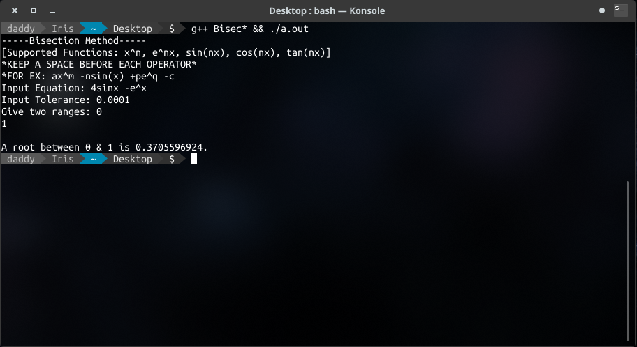

About
During my Numerical Methods course I wrote these programs on different root finding algorithm to solve basic algebraic & transcendental equations.
Development Tools
Codeblocks
Project Screenshot(s)

Methods
- Bisection Method
- Fixed Point Iterative Method
- Newton - Raphson Method
Notes
- Supported Mathematical Functions: x^n, e^nx, sin(nx), cos(nx), tan(nx)
- A space(' ') is needed before arithmetic operators.
- The formatting is strictly maintained.
- For example: We can ax^m -nsin(x) +pe^q -c
ax^m can be replaced by 4x^2
nsin(x) can be replaced by 4sinx
pe^x can be replaced by 2e^x
c is constant (1, 2, 3, ...)
Let's consider: 4sinx -e^x
Now look at the screenshot attached.
Repository
If you're interested in this project, you may browse the github repository of the project by clicking here.
Go Back to Projects Next Project